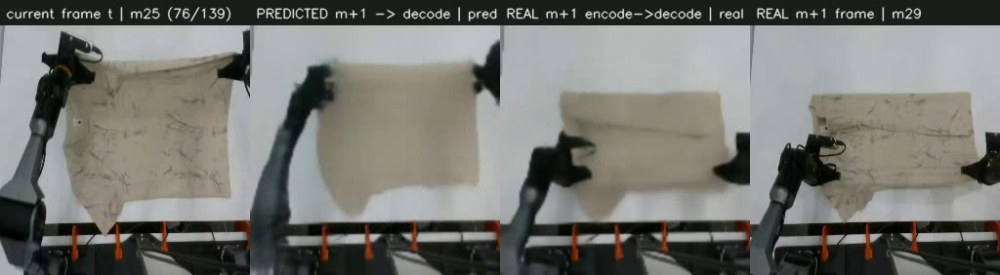
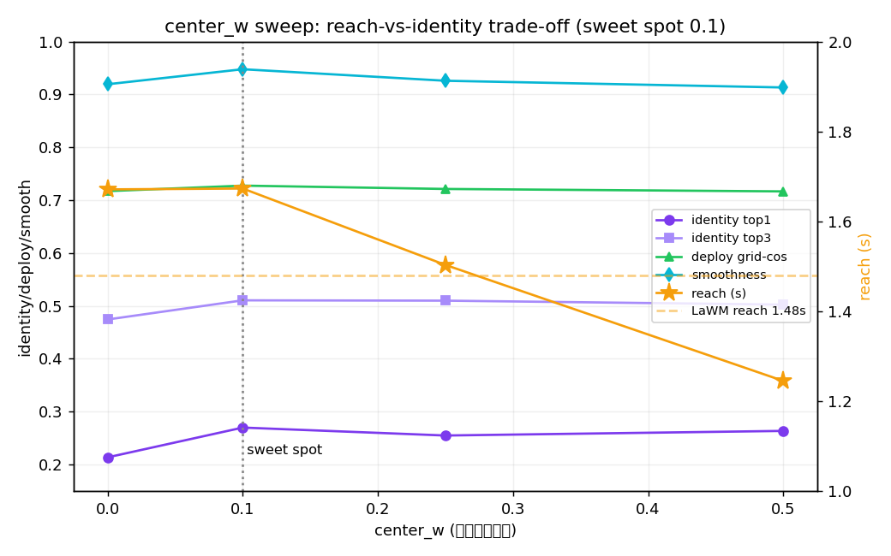
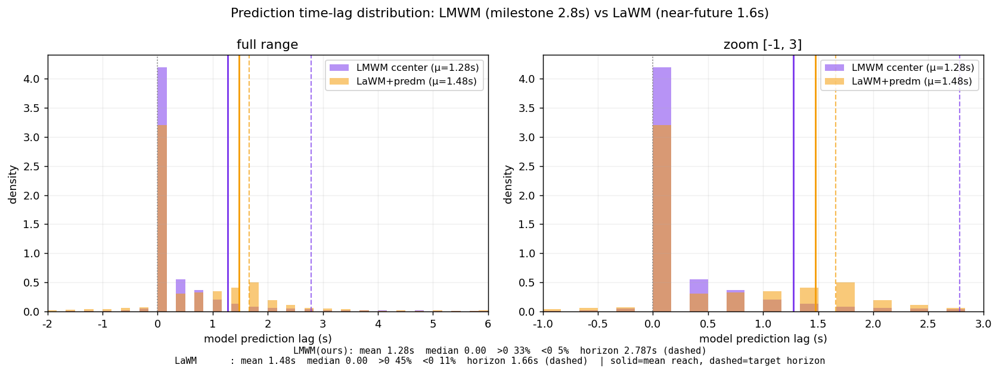

面向 kai0 π0.5 VLA 的 milestone+1 价值层宏观引导:π0.5 SigLIP 同塔 + 预测器(Predictor)+ 生成器(Generator) 两模块,目标来自 CRAVE 进度单调 milestone(DINOv3-H+CRAVE 为离线 label 工厂)。

本节是起点与离线 label 工厂,最终部署架构见 §01B。 冻结 DINOv3-H 编码器,后接轻量 forward-from-current 预测器(v1,~27M)。预测目标 = CRAVE Viterbi 单调分配下"进度前进的下一 milestone"(时间前向、跨 episode 一致、medoid 干净)—— 这套 DINOv3-H + CRAVE 在最终架构里降为离线 label 工厂(只产监督目标、不上线),在线编码换成 π0.5 SigLIP。
| 组件 | 输入 → 输出 | 内部结构(层) | 参数 |
|---|---|---|---|
| DINOv3-H 编码器 (冻结) |
256²×3 → 16×16×1280 |
patch-embed Conv2d(3→1280, 16×16, s16) + [1 CLS + 4 register token] → 32× Block { LN · RoPE-MHSA(20 头, head=64) · LayerScale ‖ LN · SwiGLU MLP(1280→5120→1280, silu) · LayerScale } → 末层 LN;取 256 个 patch token(跳过前缀) |
~840M |
| inverse (teacher) |
2×16×16×1280 → z 64/128 |
cat 两图(2560 ch) → Conv2d(2560→256, 3×3, s2)·GN(8)·GELU → Conv2d(256→256, 3×3, s2)·GN·GELU (16→8→4) → mean-pool → Linear(256→cd)·LayerNorm |
6.5M |
| predm (deploy) |
16×16×1280 → ẑ 64/128 |
同 inverse 但单帧输入:Conv2d(1280→256, 3×3, s2)·GN·GELU → Conv2d(256→256, 3×3, s2)·GN·GELU → mean-pool → Linear(256→cd)·LN | 3.6M |
| VAE 头 | code 128 → (mu,logvar) 2×128 |
Linear(128→256) → 切成 (mu, logvar) reparam z = mu + ε·exp(½·logvar), ε~N(0,1) |
~33K |
| forward | (16×16×1280)+code → 16×16×1280 |
code 广播成图后拼接 → proj Conv2d(1280+cd→512, 3×3) → 2× { GN·GELU·Conv2d(512→512, 3×3) }·GN·GELU → out Conv2d(512→1280, 3×3) (全程 16×16,空间基底=当前 grid) |
17M |
| 解码器 big+GDL (仅可视化) |
16×16×1280 → 128×128×3 |
head Conv2d(1280→512, 1×1)·BN·ReLU → 3× up { ConvT2d(4×4, s2)·BN·ReLU }: 512→384→192→96 (16→32→64→128) → Conv2d(96→96, 3×3)·BN·ReLU → out Conv2d(96→3, 3×3)·Tanh |
5M |
核心目标:给 VLA 一个 milestone+1 的价值层宏观引导 —— 两条硬指标:① 解码后要保真;② 预测的 milestone+1 在进展价值上要大于当前 stage。据此定案两模块:预测器(Predictor)= 回答"下一个价值 milestone 是哪个"(逆向 teacher 压出多峰码 ẑ,MDN K=4 + 簇中心 CE 身份锚 center_w=0.1);生成器(Generator)= 回答"它在当前场景长什么样"(AdaLN 把码调制到当前 grid 画布上,zero-init gate)。目标空间换成 π0.5 自己的 SigLIP(与策略同塔、复用 KV),DINOv3-H+CRAVE 降为离线 label 工厂。
| 模块 | 回答什么问题 | 训练形态 | 部署形态 |
|---|---|---|---|
| 预测器 Predictor | 下一个价值 milestone 是哪个? | 逆向 teacher 看真未来 → 理想码 z(128)+ 簇中心 CE 身份锚 | MDN(K=4)从当前 gist 猜码 · argmax 分量取均值(确定/平滑) |
| 生成器 Generator | 它在当前场景长什么样? | AdaLN:当前 grid 当画布,码→ per-block shift/scale/gate(zero-init),只学"变化" · 训练/部署同一形态 | |
| 维度 | 旧结构 | 最终(center_w=0.1) |
|---|---|---|
| 编码器 | DINOv3-H 840M(在线) | π0.5 SigLIP(同塔 · 复用 KV)· DINOv3+CRAVE 降为离线 label 工厂 |
| 预测 | 单段 predm→forward,VAE 挂 code | 预测器(MDN 身份)+ 生成器(AdaLN 落地) |
| 多峰放哪 | code(VAE)→ 无用(+0.02) | 身份(MDN)→ 随 K 单调,id top3 .474→.511 |
| 价值锚 | 无 | 簇中心 CE 锚 center_w=0.1(强制码带"哪个价值簇") |
| 保真(硬指标①) | off-manifold 黑斑 | 簇中心 on-manifold 锚 → 解码干净 |

一句话:预测器 = teacher 逆向压出"去哪个价值 milestone"的多峰码(部署时 MDN 猜);生成器 = forward-AdaLN 把码调制到当前画布上"画出它长什么样"。两条硬指标 —— ①保真靠簇中心 on-manifold 锚,②价值前向靠 Viterbi 单调目标 + 簇中心 CE —— 均达标。
最终模型在 未训练的 kai0 留出集 与 vis_base 跨数据集 上预测 milestone+1。四栏 = 当前 │ 预测 m+1 解码 │ 真实 m+1 编解码 │ 真实 m+1 帧(都过同一解码器 → 差异纯是预测质量)。
从不同角度衡量"预测得准不准" —— 本科生级直白解释。
| 指标 | 直白定义 | 作用 / 表明什么 |
|---|---|---|
| grid-cos | 预测特征图 与 真实目标图 的余弦相似度 | 核心保真度,越高越准 |
| oracle | 用"作弊码"(偷看真未来算的码)重建的 cos | 天花板:知道真答案能做多好 = 表达上限 |
| deploy | 只看当前帧、用预测码重建的 cos | 实战值:真部署能做多好 ← 最关心 |
| persistence | 把"当前帧"当预测(不动)的 cos | 白给基线:啥也不预测得多少分 |
| lift | = deploy − persistence | 净技巧:扣掉"目标本来就近"的便宜 |
| model lag / ratio | 预测匹配到的真帧晚几秒 / 除以目标跨度 | 模型敢预测多远;ratio<1 = 欠射 |
| best-of-8 | VAE 采 8 个取最像的 cos | 未来多不多模态(远超均值=多分支) |
| corr(value,time) | CRAVE 进度 与 时间 的相关 | 进度标签质量(0.94=很可靠) |
同一批 kai0 数据、同一 lag 协议(预测帧匹配到的真帧比当前晚几秒)实测。⚠️ grid-cos 编码器空间不同(ViT-B 768 vs SigLIP 1152)不硬比;reach(秒)是严格同口径 —— 官方 LaWM ckpt 建 deploy-predm 后在我们数据上测出。
| 指标 | LaWM(官方 ckpt) | 我们最终(cw=0.1) | 可比性 / 口径 |
|---|---|---|---|
| reach / model lag(秒) | 1.48s | 1.67s | 严格同口径 → 绝对更远 |
| 目标 horizon(秒) | 固定 1.66s(近未来) | 2.64s(milestone+1) | 我们目标本就更远更难 |
| undershoot ratio(reach/目标) | 0.89 | 0.63 | 近未来易打满 → LaWM ratio 天然高 |
| 前向预测率 frac(>0) | 44.9% | 35.3%(尾更长) | 见分布图:LaWM 中段密,我们近+远双峰 |
| 负滞后率 frac(<0) | 10.7% | 6.5% | 我们更少"预测倒退" |
| oracle grid-cos | 0.770 | 0.715 | 编码器空间不同,不硬比 |
| persistence(白给基线) | 0.627 | 0.599 | 目标离当前多近 |
| lift(oracle − persist) | +0.143 | +0.116 | 净技巧;空间不同仅趋势可比 |
| deploy grid-cos | —1 | 0.728 | 只看当前帧的实战值 |
| 身份 top-3(下一 milestone) | N/A4 | 0.511 | 价值多峰命中(硬指标②) |
| 预测平滑度(相邻帧 cos) | — | 0.948 | 不抖 → 对 VLA 是稳定信号 |
| corr(value, time) | N/A4 | 0.94 | CRAVE 进度标签质量 |
| 世界模型参数 | 数百 M Transformer | ~34M CNN(轻 ~10×) | 结构规模 |
| 下游 SR(extrinsic) | LIBERO 98.6% 等 | 待测(下一步) | 唯一未覆盖的短板 |
1 LaWM 的 LAM 内不产出预测码——部署时"从现在猜码"甩给下游 VLA;我们给它补了个 deploy-predm 才能测 reach。 4 CRAVE 进度/身份标签为我们特有;LaWM 无进度/事件标签。
一句话读表:严格同口径的 reach 我们 1.67s > LaWM 1.48s —— 且是在更远(2.64s vs 1.66s)、更难的 milestone 目标上做到的。"LaWM 敢预测更远"的错觉来自它 ratio 高(0.89),那是因为它目标本就近(1.66s)、近未来易打满;论绝对预测距离我们反超。我们唯一还没补的是下游 SR。
LaWM(jialei02/lawam_lam)官方 checkpoint 建 deploy-predm 后在我们数据上实测。⚠️ grid-cos 编码器空间不同 → 不硬比;reach(秒)同口径可比。两者结构都收敛到 AdaLN 码调制。
结构上一句话:LaWM = 重型 Transformer/DiT + 全局注意力 + 小码(32d)+ 预测码甩给策略;我们 = 轻型 CNN 的预测器 + 生成器 + 当前 grid 画布 + 内置预测器自包含 + π0.5 同塔编码器。两者都收敛到 AdaLN 码调制(我们消融里 concat→lag/平滑掉,自发换成 AdaLN)。实测:数百 M 的 Transformer-DiT 并未碾压我们 ~34M CNN(reach 1.48s vs 1.67s,lift 相当)。

| 维度 | LaWM(baseline) | 我们最终(cw=0.1) |
|---|---|---|
| reach / model lag(秒 · 同口径) | 1.48s | 1.67s |
| oracle grid-cos(空间不同) | 0.770 | 0.715 |
| lift over persistence | +0.143 | +0.116 |
| 码调制方式 | AdaLN-DiT(Transformer) | AdaLN(CNN · 收敛同款) |
| 世界模型参数 | 数百 M transformer | ~34M CNN(轻 ~10×) |
| 跨数据集泛化 | 定性(3000h) | 定量(vis_base 0.56 零微调) |
| 下游成功率 SR | LIBERO 98.6% 等 | 待测 → 接入 π0.5(下一步) |
下一步:接入 π0.5 测下游成功率 SR。 两条硬指标(①解码保真 ②价值前向)+ reach 已达/超 LaWM 同级;唯一未覆盖的是 extrinsic 的真机/benchmark 成功率 —— 把生成器出的子目标 grid Ĝ + 预测器码 ẑ 注入 kai0 π0.5 action expert(KI + RoPE 偏移 + mask),训练后测 action-MAE / SR,即可与 LaWM 的 98.6% 等直接对齐。